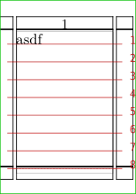
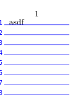

Contents
Summary
The command
\showgrid
shows the grid
Settings
| \showgrid[...,...] | |
| [...,...] | reset bottom top none all lines frame nonumber right left outer inner columns |
| Option | Explanation |
|---|---|
| bottom | show grid below page content |
| top | show grid over page content |
| none | no lines, no frame |
| all | show lines and frame |
| lines | show lines |
| frame | show frame(s) |
| nonumber | no numbers |
| right | numbers on the right |
| left | numbers on the left |
| outer | numbers in the outside margin (for double-sided) |
| inner | numbers in the inside margin (for double-sided) |
Description
Show the grid on which typesetting would take place.
Use e.g. \definepalet[layout][grid=blue] to change the color of the grid.
Examples
Example 1
-
\setuppapersize[A10] \showframe \showgrid \starttext asdf \stoptext
- 
Example 2
-
\setuppapersize[A10] \definepalet[layout][grid=blue] \showgrid[left,top,lines] \starttext asdf \stoptext
- 
Notes
See also
- page-grd.mkiv
-
\setuplayout
to enable typesetting on the grid with
grid=yes. - \definepalet to change the colors